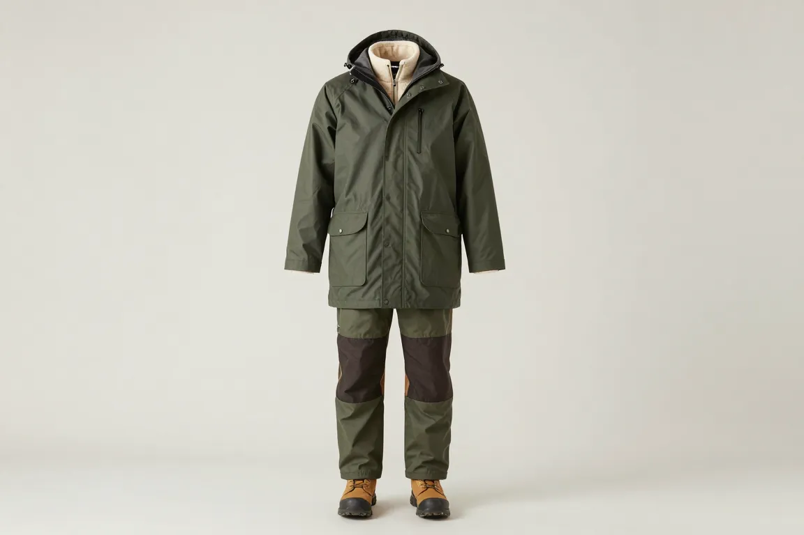

Северная функциональная одежда для природы
мода · 1960–now · также: Скандинавская одежда для природы, Одежда фрилуфтсливу, Одежда для фьелля и леса
Простая прочная одежда северного похода и долгого перехода. Куртка из саржи с вощёной пропиткой, слои шерсти и флиса и дизайн, служащий сначала тропе.

Главная идея
Одевайтесь для дня на природе в любую погоду. Простые формы, прочная ткань, которую можно вощить и чинить, и слои, служащие ходоку всю жизнь.
Принципы дизайна
- Тките плотную полихлопковую саржу 300–400 г на квадратный метр для куртки и брюк.
- Втирайте воск каждый сезон, чтобы ткань не пропускала дождь и ветер.
- Кройте куртку просторной, под три слоя шерсти и флиса.
- Добавляйте большой нагрудный карман и капюшон, надеваемый поверх кепки.
- Усиливайте колено, седло и локоть вторым слоем.
- Выбирайте приглушённый земляной цвет, сливающийся с лесом и фьеллем.
- Чините изношенную вещь на месте заплатой, а не новой покупкой.
Антипаттерны
- Глянцевая тонкая оболочка для города
- Яркий цвет, спорящий с фьеллем
- Тесный крой, не пускающий слои
- Украшение, не служащее делу
- Одноразовая вещь без пути ремонта
Палитра
Родословная
- Перекликается с
- Предмет скандинавского модерна
- Развился из
- Ранний альпинизм
- Развился в
- Альпинизм в технической оболочке
- Скрещивается с
- Американская рабочая одежда, Беговая кроссовка для результата
Использовать
SKILL.md · tokens.css · исходный JSON · открыть в демо